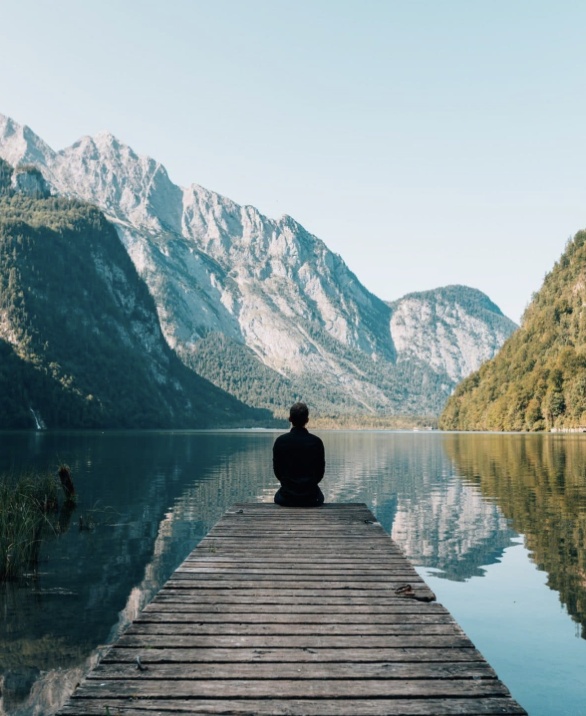
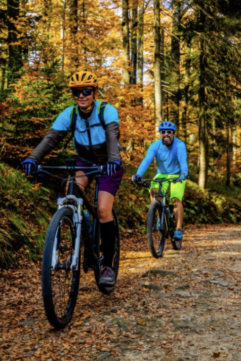
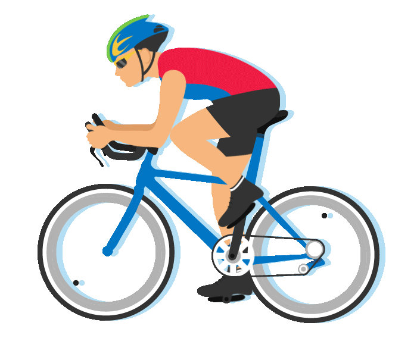

Reconnect with Nature and Discover How the Outdoors Can Improve Your Health, Energy, and Overall Well-Being

At Thrive, we believe that nature is one of the most powerful tools for improving health and well-being. Spending time outdoors can reduce stress, boost energy levels, and improve both physical and mental health. Fresh air, sunlight, and movement in natural surroundings help the body feel stronger and the mind feel calmer. Whether it is a walk in the forest, exercising in the park, or simply taking time to relax outside, nature creates balance in everyday life. Thrive connects wellness with the outdoors, inspiring people to build healthier habits through the healing power of nature.

Walk More, Explore Freedom Outdoor
Walking is one of the simplest and most effective ways to improve your health. Regular hikes and outdoor walks can strengthen the heart, improve endurance, and increase daily energy levels. It also gives people the chance to disconnect from busy routines and enjoy peaceful surroundings. In Norway, the many trails and cabins provided by DNT make it easier for everyone to experience nature in a safe and accessible way. From short family walks to longer mountain adventures, these opportunities encourage people to stay active while creating memorable experiences outdoors.
Training outside
Outdoor training is a powerful way to improve both physical fitness and mental well-being. Activities such as cycling, running, hiking, swimming, and skiing challenge the body while allowing you to enjoy fresh air and natural surroundings. Exercising outside can build strength, endurance, and balance, while also reducing stress and increasing motivation.
Unlike indoor workouts, outdoor activities offer variety and adventure, making exercise feel more enjoyable and inspiring. At Thrive, we encourage people to move beyond the gym and discover the many benefits of training in nature.

BICKING
RUNNING
HICKING
SWIMMING
SKIING
